| Característica | 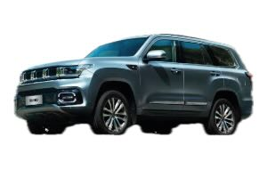 BAIC BJ605040 mm, Mild-Hybrid |
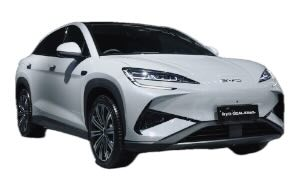 BYD Sealion 74830 mm, 100% eléctrico |
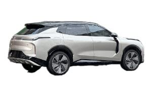 Lynk & Co 084820 mm, PHEV |
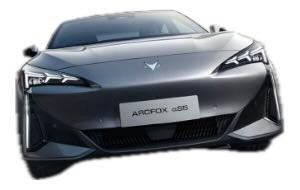 Arcfox S54820 mm, 100% eléctrico |
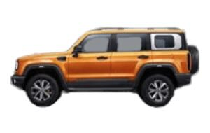 BAIC BJ40 Pro4790 mm, Naftero |
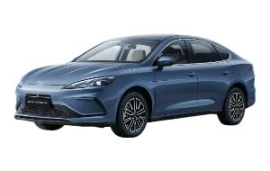 Seal 5 DM-i4780 mm, PHEV |
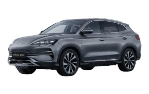 Seal U DM-i4775 mm, PHEV |
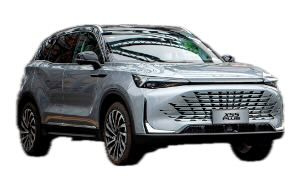 BAIC X55 Plus4740 mm, Naftero |
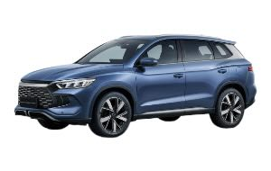 Song Pro4738 mm, PHEV |
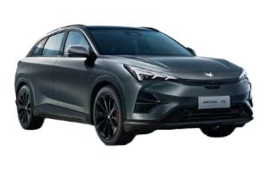 Arcfox T54690 mm, 100% eléctrico |
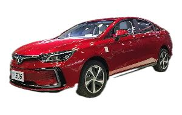 BAIC EU54670 mm, 100% eléctrico |
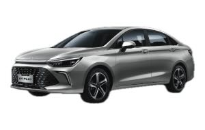 BAIC U5 Plus4660 mm, Naftero |
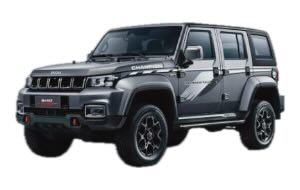 BAIC BJ40 Plus~4630mm (est.) · Naftero |
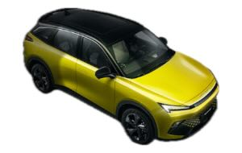 BAIC X55 II4620 mm, Naftero |
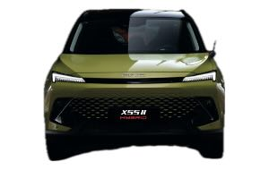 BAIC X55 II Hybrid~4620mm (est.) · Híbrido |
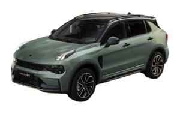 Lynk & Co 014550 mm, PHEV |
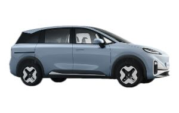 Arcfox Koala S4500 mm, 100% eléctrico |
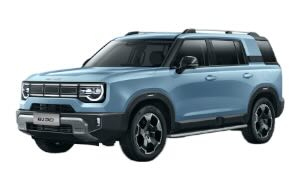 BAIC BJ30 4x2~4500mm (est.) · Híbrido |
 BAIC BJ30 4x4~4500mm (est.) · Híbrido BAIC BJ30 4x4~4500mm (est.) · Híbrido |
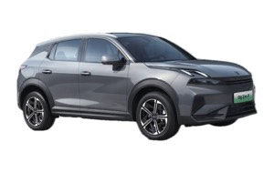 Lynk & Co 064350 mm, PHEV |
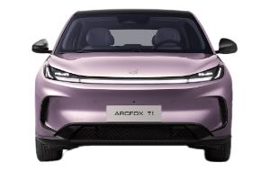 Arcfox T14337 mm, 100% eléctrico |
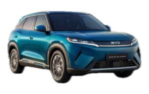 Atto 2 DM-i4330 mm, PHEV |
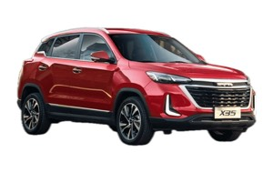 BAIC X354325 mm, Naftero |
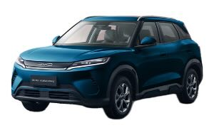 Yuan Pro4310 mm, 100% eléctrico |
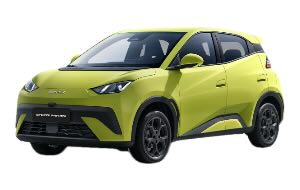 Dolphin Mini3990 mm, 100% eléctrico |
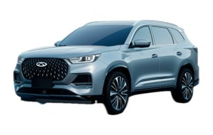 Chery Tiggo 8 ProNaftero |
Haval H6 Pro HEVHEV | 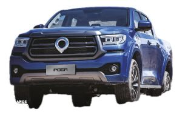 Poer 4WDDiésel (pickup) |
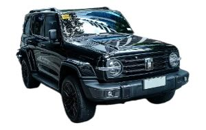 Tank 300Naftero |
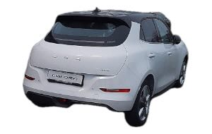 Ora 03100% eléctrico |
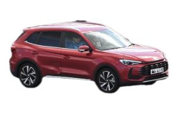 MG ZS HEVHEV |
Changan CS55 PlusPHEV | 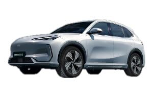 Geely EX5100% eléctrico |
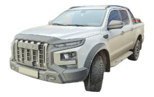 JAC T9Diésel (pickup) |
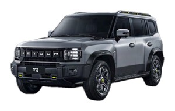 Jetour T2Naftero |
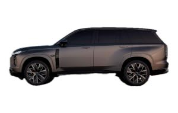 GAC S7PHEV |
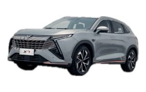 Kaiyi X7Naftero |
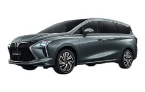 Forthing U-TourHEV |
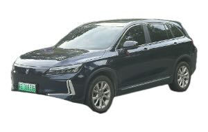 Skywell ET5100% eléctrico |
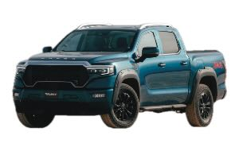 Foton Tunland V95617 mm, Naftero (pickup) |
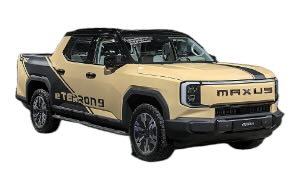 Maxus eTerron100% eléctrico (pickup) |
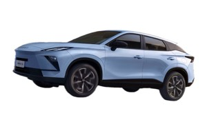 Omoda 54447 mm, HEV |
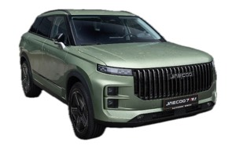 Jaecoo 74500 mm, PHEV |
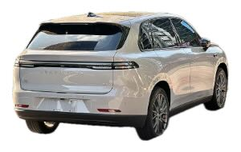 Leapmotor C104739 mm, REEV (enchufable) |
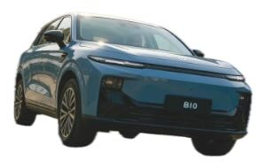 Leapmotor B104530 mm, REEV (enchufable) |
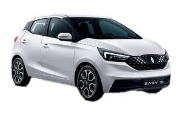 JMEV Easy 33720 mm, 100% eléctrico |
Chery Arrizo 84757 mm, PHEV | 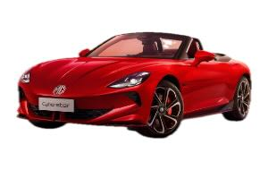 MG Cyberster4535 mm, 100% eléctrico |
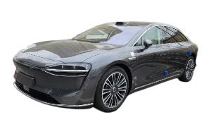 Stelato S95160 mm, 100% eléctrico |
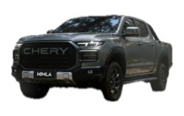 Chery Himla5320 mm, Diésel (pickup) |
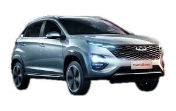 Chery Tiggo 2 Pro Max4200 mm, Naftero |
Chery Tiggo 4 Hybrid4320 mm, HEV | Chery Tiggo 4 Pro4320 mm, Naftero | 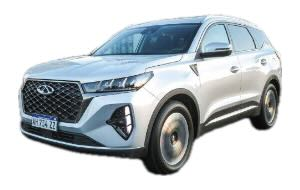 Chery Tiggo 7 Pro MHEV4500 mm, Mild-Hybrid |
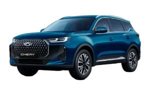 Chery Tiggo 7 Pro PHEVPHEV |
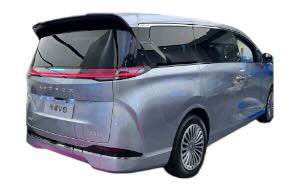 Arcfox V95300 mm, PHEV |
BYD Shark5457 mm, PHEV (pickup) | Deepal S054620 mm, PHEV | DFSK Glory 5004380 mm, Naftero | DFSK Glory 5804680 mm, Naftero | Dongfeng Box4020 mm, 100% eléctrico | Dongfeng Huge4720 mm, HEV | Dongfeng Mage4650 mm, HEV | Forthing Friday REEV4600 mm, PHEV | Forthing S7 REEV4940 mm, PHEV | Forthing T5 EVO4565 mm, Naftero | Foton Tunland G75340 mm, Diésel (pickup) | GAC Aion V4605 mm, 100% eléctrico | Ora 5 HEV4471 mm, HEV | Haval H7 4WD4800 mm, Naftero | Haval H7 HEV4800 mm, HEV | Haval Jolion Pro HEV4470 mm, HEV | JAC EV 30X4025 mm, 100% eléctrico | JAC JS44410 mm, Naftero | JAC JS6 PHEV4605 mm, PHEV | JAC JS8 Pro4825 mm, Naftero | JAC S24153 mm, Naftero | JAC T85325 mm, Diésel (pickup) | Jetour Dashing4590 mm, Naftero | Jetour G7005198 mm, PHEV | Jetour T1 i-DM4705 mm, PHEV | Jetour T14705 mm, Naftero | Jetour T2 i-DM4785 mm, PHEV | Jetour X504397 mm, Naftero | Jetour X70 Plus4724 mm, Naftero | Jetour X704743 mm, Naftero | JMC Grand Avenue5435 mm, Naftero (pickup) | Kaiyi X3 Pro4400 mm, Naftero | Kaiyi X34400 mm, Naftero | Leapmotor B03X4270 mm, 100% eléctrico | Lynk & Co 9005240 mm, PHEV | Maxus D905046 mm, Mild-Hybrid | Maxus T60 Max5365 mm, Diésel (pickup) | MG 3 HEV4113 mm, HEV | MG HS HEV4670 mm, HEV | Omoda 74660 mm, PHEV | Omoda E54545 mm, 100% eléctrico | Soueast S064616 mm, PHEV | DFSK E5 Plus4760 mm, PHEV | DFSK Glory 6004720 mm, Naftero | Forthing T5 HEV4565 mm, HEV | Foton Tunland V75617 mm, Mild-Hybrid (pickup) | JMC Grand Avenue ProNaftero (pickup) | Kaiyi X7 Hybrid4710 mm, PHEV | Maxus T605365 mm, Diésel (pickup) | MG 34120 mm, Naftero | MG ZS4430 mm, Naftero | SWM G03F4605 mm, Naftero | Changan Eado Plus PHEV4770 mm, PHEV | Forthing V9HEV | GAC Aion ES4810 mm, 100% eléctrico | GAC Aion UT4270 mm, 100% eléctrico | GAC Emkoo HEV4680 mm, HEV | GAC Empow4700 mm, Naftero | GAC GS3 Emzoom4446 mm, Naftero | GAC GS84980 mm, Naftero | Geely Icon4350 mm, Naftero | Haval H6 4WD4653 mm, Naftero | Haval H6 GTNaftero | Haval Jolion HEVHEV | Rely R85370 mm, Diésel (pickup) | smart #14300 mm, 100% eléctrico | smart #34400 mm, 100% eléctrico | SWM G03F EDi4605 mm, REEV (enchufable) |
|---|